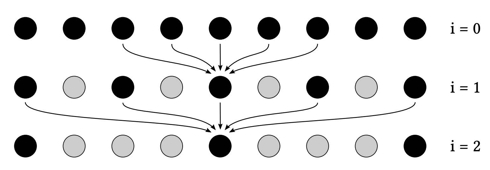
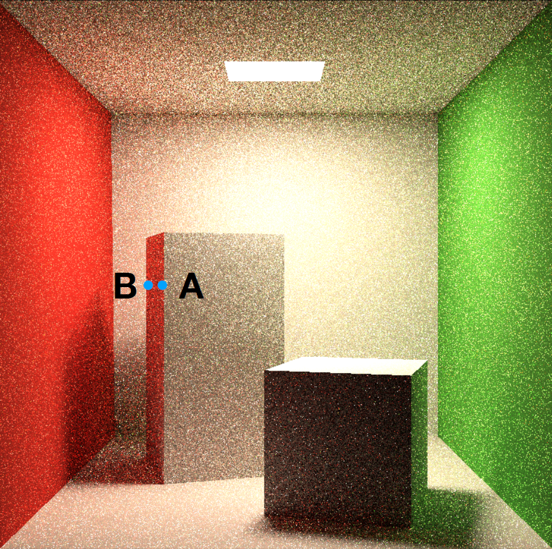
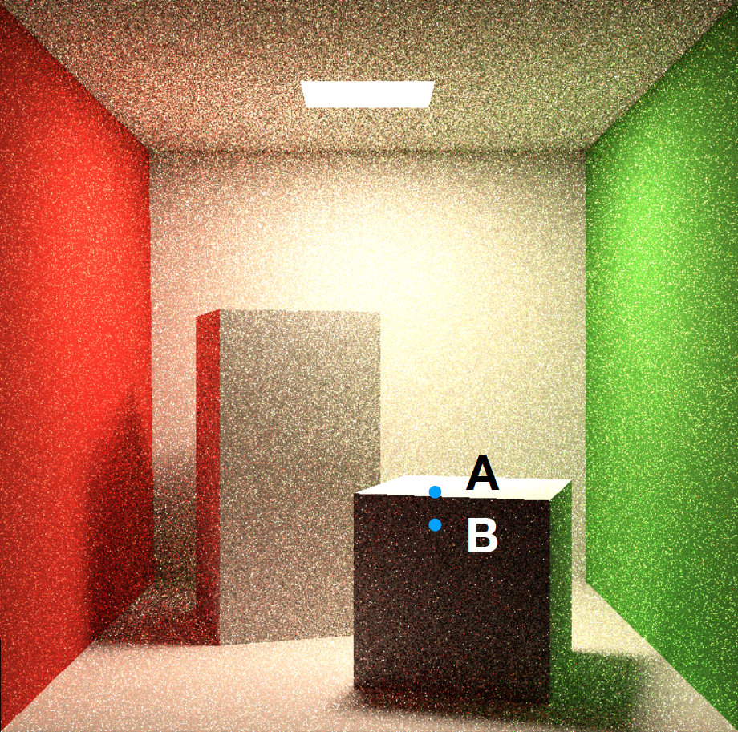
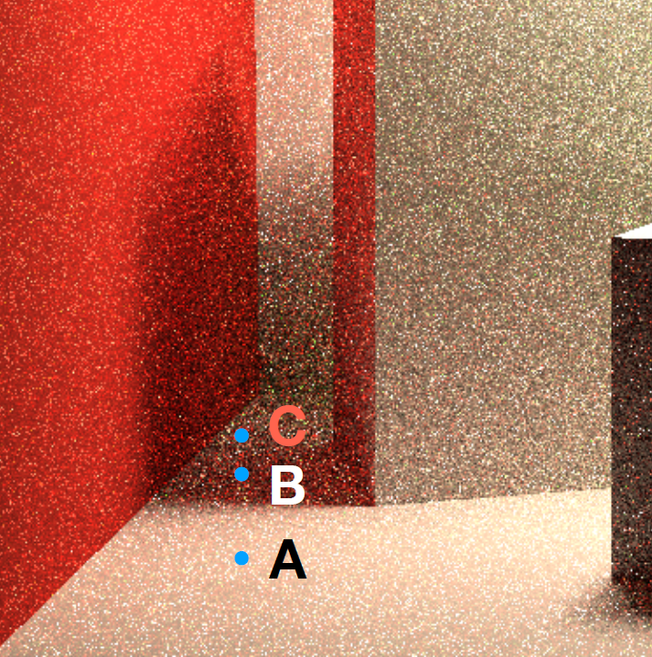
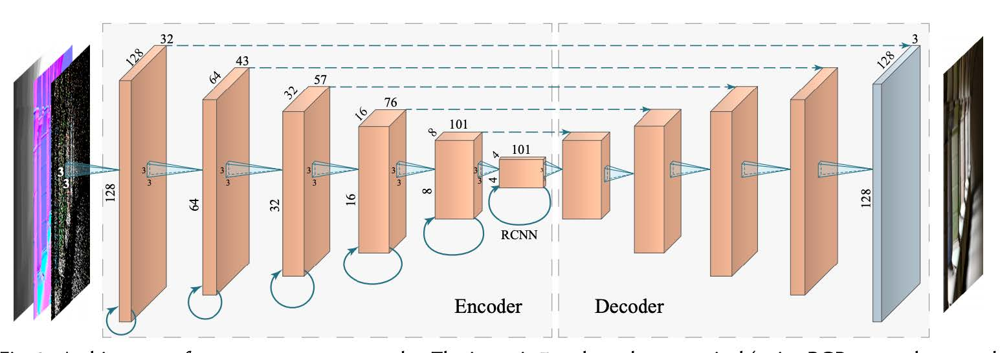
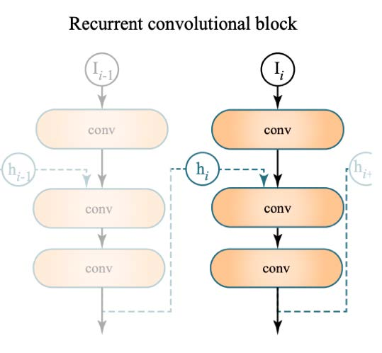

Lecture 12-13 Real-Time Ray-Tracing
RTX : 10G rays per second == 1 sample per pixel
1 SPP path tracing == 1 rasterization (primary) + 1 ray (primary visibility) + 1 ray (primary bounce) + 1 ray (primary vis.) +
1 SPP is Extremely Noisy
Key Tech : Denosing
Goals : + Quality (no overblur, no artifacts, keep all details) + Speed (< 2ms to denoise per frame)
==> Temporal !
Temporal Filtering
Key idea ：
- 假定前一帧已完成降噪，直接使用
- 使用motion vectors找前一位置
- 增加了SPP（引用前一帧的SPP，前一帧又引用了前两帧……）
Geometry buffer
- 渲染时生成的附加信息，消耗较少
- 像素深度、法线、世界坐标等
- 屏幕空间的信息
Back Projection
- 找到同一像素在上一帧的位置
- 直接使用G-Buffer： \(s=M^{-1}V^{-1}P^{-1}E^{-1}x\ ({\rm Still\ with\ }z{\rm \ value})\)
- Motion : \(s^{'}\xrightarrow{T}s\quad\Rightarrow\quad s^{'}=T^{-1}s\)
- 前一帧的屏幕坐标： \(x^{'}=E^{'}P^{'}V^{'}M^{'}s^{'}\)
Temporal Accum. / Denoising \[ \overline{C}^{(i)}={\rm SpatialFilter}(\widetilde{C}^{(1)})\\ C^{(i)}=\alpha\overline{C}^{(i)}+(1-\alpha)C^{(i-1)}\quad \alpha\approx0.1\sim0.2 \]
滤波不会使画面改变亮度，低SPP的“暗”来源于超亮噪声被削波
Temporal Failure
- 切换场景/镜头：Burn-in period 黑帧预热
- Dolly out / Zoom out，几何信息不断增多：尽量避免这种情况
- 突然出现被遮挡的物体，出现残影：
- Clamping：把前一帧的结果“拉”近当前帧，减小残影
- Detection：
- 使用Object ID检测Temporal failure（判断前后帧motion vector对应的物体是否相同）
- 改变 \(\alpha\) ，在Temporal failure时减少对前一帧的依赖
- 增强Spatial filtering
- 问题：重新带来了噪声
- 光源移动时，阴影“拖影”
- 物体移动时，镜面反射“延迟”（Glossy材质）
Spatial Filtering
Low-pass filter：减少高频噪声，但可能会导致高频信号丢失、低频噪声保留
Gaussian filtering
For each pixel i
sum_of_weights = sum_of_weighted_values = 0.0
For each pixel j around i
Calculate the weight w_ij = G(|i - j|, sigma)
sum_of_weighted_values += w_ij * C^{input}[j]
sum_of_weights += w_ij
C^{output}[I] = sum_of_weighted_values / sum_of_weights*高斯模糊理论范围是无限远，但往往限制在周围一圈像素计算（远处权重极低，直接忽略）
Bilateral filtering 双边滤波
Problem of Gaussian filtering：边界也被模糊，高频信息丢失
边界：颜色突变
做法：不让颜色突变的像素参与贡献
权重函数： \[ \displaystyle w(i,j,k,l)={\rm exp}\left(-\frac{(i-k)^2+(j-l)^2}{2\sigma_d^2}-\frac{\|I(i,j)-I(k,l)\|^2}{2\sigma_r^2}\right)\\ (i,j)为某一像素，(k,l)为其周边一像素 \] Problem：如何区分边界/噪声？ 参考SVGF
==> key idea：增加滤波的条件——渲染过程中的G-Buffer 联合双边滤波
大滤波核计算方法
- Separate Passes：先做横向滤波、再做纵向滤波 \(O(n^2)\to O(n+n)=O(n)\)
- 二维高斯函数的定义 \(G_{2D}(x,y)=G_{1D}(x)\cdot G_{1D}(y)\)
- Filtering == convolution \(\displaystyle\iint F(x_0,y_0)G_{2D}(x_0-x,y_0-y)\,\mathrm dx\mathrm dy=\int\left(\int F(x_0,y_0)G_{1D}(x_0-x)\,\mathrm dx\right)G_{1D}(y_0-y)\,\mathrm dy\)
- 理论上复杂的双边滤波不能这么计算，但近似强行如此计算
- Progressively Growing Sizes
- 多次滤波，逐渐增加大小
- eg. a-trous wavelet
- 多次pass，每次都是 \(5\times 5\) 大小
- 每次pass，采样间隔为 \(2^{i-1}\) 
- eg. \(64^2\to5^2\times5\)
在Filter之前去除超亮/超暗像素（Outlier）
- Outlier detection
- 对 \(7\times7\) 网格计算均值和方差
- 超出 \([\mu-k\sigma,\mu+k\sigma]\) -> Outlier
- Outlier removal
- clamp to \([\mu-k\sigma,\mu+k\sigma]\)
Specific Filtering Approaches for RTRT
SVGF, Spatiotemporal Variance-Guided Filtering
与前文基本时空降噪方法相似，多了一些Trick和Variance分析方法
联合双边滤波 - 3个因素
深度 \[ w_z=\exp\left(-\dfrac{|z(p)-z(q)|}{\sigma_z|\nabla z(p)\cdot(p-q)|+\epsilon}\right)\quad \text{$z$为深度} \]
只要是衰减函数就可以，这里不是高斯函数
\(\epsilon\) 为了防止分母为零，一般为很小的值
\(\nabla z(p)\) 深度的梯度，为了防止如图AB点情况，斜侧面深度差异过大时出现误差，用关于垂直法线方向/切平面的深度变化（如图AB的物理空间距离即所在面上法线垂直方向的深度变化） 
法线 \[ w_n=\max(0,n(p)\cdot n(q))^{\sigma_n} \] \(\sigma_n\) 控制衰减快慢，即法线之间的差异要求是否严格  PS: 使用应用法线贴图之前的法线（应用法线贴图后表面凹凸不平，难以判断）
Luminance (gray scale) \[ w_l=\exp\left(-\dfrac{|l_i(p)-l_i(q)|}{\sigma_l\sqrt{g_{3\times 3}({\rm Var}(l_i(p)))+\epsilon}}\right) \] 
亮度差异大的点不参与贡献——但单个像素亮度受噪声影响，故除以附近区域标准差（例如\(7\times7\)区域）（使用Temporal累计标准差，再进行一次\(3\times3\)滤波平均）。
Tradeoff：相比较noise，宁愿选择overblur 改进：ASVGF，优化overblur的问题（也可以理解为选择noise）
问题：动态光源阴影残影
RAE, Recurrent AutoEncoder
基本想法：用Recurrent denoising AutoEncoder对Path Tracing结果降噪，神经网络方法。
后处理方法
利用部分G-Buffer信息（作为神经网络输入）
神经网络自动累计Temporal信息
- AutoEncoder (U-Net) 
- Recurrent：每一层神经网络不止连接下一层，还要连接自身（Temporal） 
问题：暗、存在边缘错误、overblur
优势：对于不同的spp数输入，结果稳定